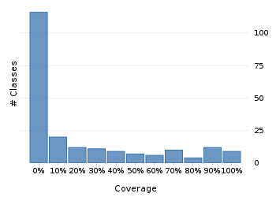
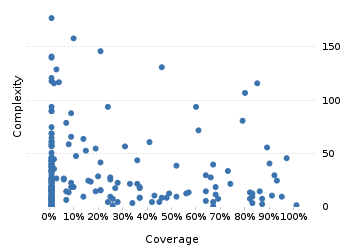

Project overview
Code coverage 243 classes, 4,145 / 22,362 elements
0.1853590918.5%
Test results 0 / 0 tests 0 secs
No test results
No test results could be found. Please ensure that you have instrumented your unit tests correctly.
Code metrics
5,152
13,301
3,909
243
167
8
70,810
28,752
7,254
0.55
3.4
16.09
30.38
1.86
Class Coverage Distribution

Class Complexity

Coverage tree map
Generating Coverage Tree Map. Please wait...

Top 20 project risks
BasicGJChronology
ZoneInfoCompiler
DateTimeZoneBuilder.PrecalculatedZone
DateTimeFormatterBuilder.NumberFormatter
DateTimeZoneBuilder
DateTimeZoneBuilder.OfYear
CachedDateTimeZone.Info
AssembledChronology.Fields
ZoneInfoCompiler.DateTimeOfYear
DateTimeZoneBuilder.RuleSet
ZoneInfoCompiler.Rule
DateTimeZoneBuilder.DSTZone
ZoneInfoCompiler.Zone
DateTimeFormatterBuilder.Composite
DateTimeFormatterBuilder.MatchingParser
ISODateTimeFormat.Constants
DateTimeFieldType.StandardDateTimeFieldType
DateTimeFormatterBuilder.Fraction
DurationFieldType.StandardDurationFieldType
DateTimeFormatterBuilder.TimeZoneOffset
Most complex packages
| 1. | 0.0551159235.5% |
org.joda.time 2498 |
| 2. | 0.1795272518% |
org.joda.time.format 1625 |
| 3. | 0.2228557922.3% |
org.joda.time.chrono 1288 |
| 4. | 0.1767001217.7% |
org.joda.time.field 670 |
| 5. | 0.7275334672.8% |
org.joda.time.tz 582 |
Most complex classes
| 1. | 0.00% |
LocalDateTime 179 |
| 2. | 0.090721659.1% |
LocalDate 160 |
| 3. | 0.2093933520.9% |
DateTimeZone 148 |
| 4. | 0.00% |
DateTime 143 |
| 5. | 0.00% |
PeriodFormatterBuilder.FieldFormatter 142 |